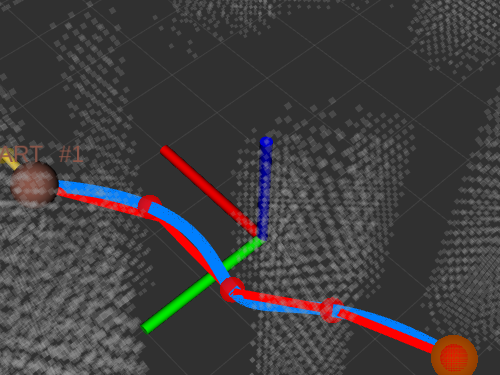
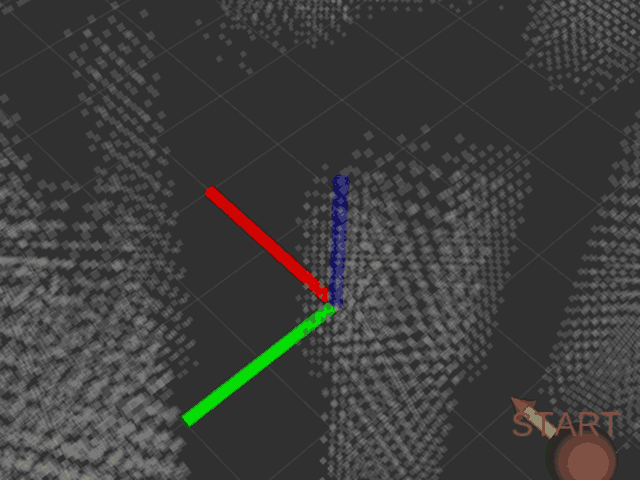
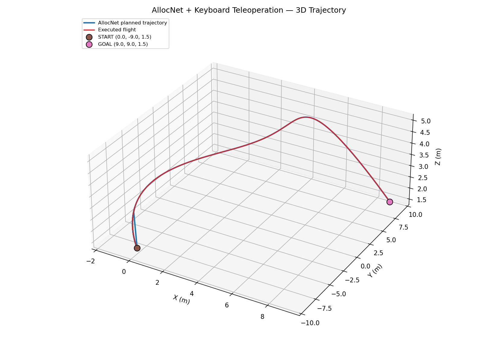
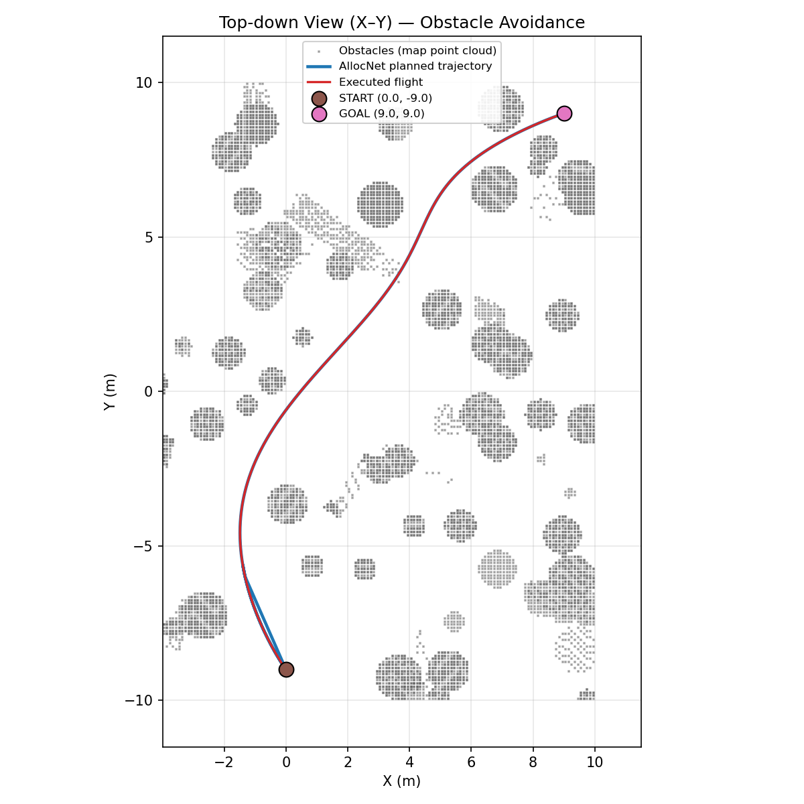
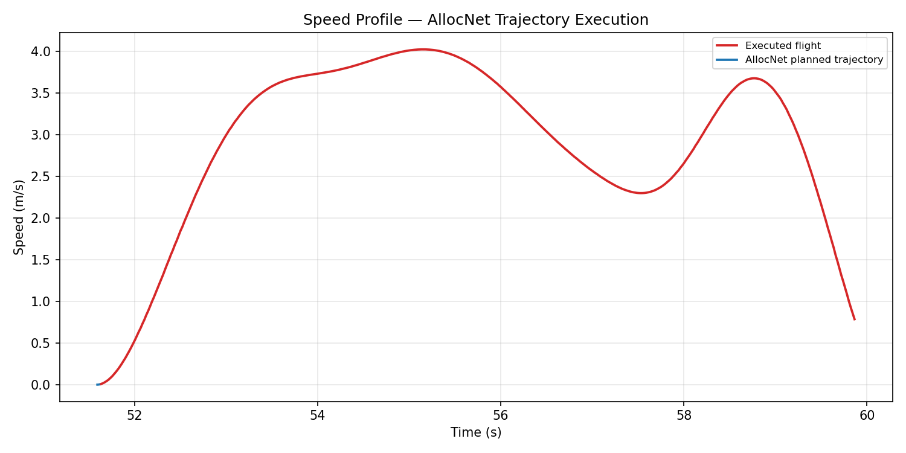
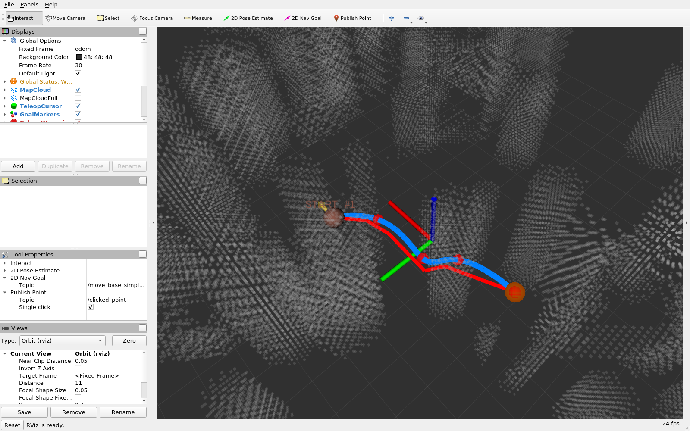

AllocNet 四旋翼避障轨迹规划与键盘遥操作
本模块在 AllocNet（KumarRobotics， RA-L 2024）的基础上，补齐了人机交互层：用键盘精确下发航点、把一次性发布的 地图转为常驻话题、记录轨迹数据、并采集演示素材。
上游 AllocNet 提供规划算法；本模块解决「怎么方便地用它做实验」。
1. 要解决的问题
上游 AllocNet 通过 RViz 的 2D Nav Goal 工具下发起终点：鼠标在平面上点两下。 用于教学和实验时，这个交互方式有三个不便：
| 问题 | 后果 |
|---|---|
| 无法精确控制高度 | 鼠标只给出 x-y，高度靠约定，无法定量研究 |
| 无法精确复现 | 手点坐标每次不同，不利于对比实验 |
| 无法连续操作 | 想「走一段、停一下、再规划」很别扭 |
本模块用键盘驱动的虚拟航点游标替代鼠标：坐标精确到步长（默认 0.5 m）， 每次下发的航点都可复现，并且支持无图形环境下的脚本化驱动。
2. 方法
2.1 整体数据流
随机障碍地图生成"] end subgraph 人机交互层 KB["planner/teleop_keyboard.py
键盘遥操作游标"] MR["planner/map_republisher.py
地图 latched 转发"] RV["rviz
可视化"] end subgraph 规划层 LP["planner/learning_planning
AllocNet 推理 + QP 优化"] end subgraph 记录层 RC["planner/record_trajectory.py"] CSV[("trajectory.csv")] end SM -- "/structure_map/global_gridmap
非 latched，只发一次" --> MR MR -- "/map/global_gridmap
latched" --> LP MR -- "/map/global_gridmap_vis
latched，降采样" --> RV KB -- "/move_base_simple/goal" --> LP KB -- "/teleop/cursor
/teleop/goal_markers" --> RV LP -- "/visualizer/trajectory
/visualizer/route" --> RV LP -- "/visualizer/speed" --> RC RC --> CSV
2.2 核心发现：高度被编码进 orientation.z
读上游 learning_planning.cpp 可以看到规划器忽略 pose.position.z，
真实高度由 pose.orientation.z 作为归一化比例决定：
const double zGoal = mapBound[4] + dilateRadius +
fabs(msg->pose.orientation.z) *
(mapBound[5] - mapBound[4] - 2 * dilateRadius);
const Eigen::Vector3d goal(msg->pose.position.x, msg->pose.position.y, zGoal);
代入本模块 launch 的参数（z_origin=0, z_size=5, dilate=0.2）：
z_goal = 0.2 + |orientation.z| × (5 − 0.4) = 0.2 + 4.6 × ratio
因此 teleop_keyboard.py 在 altitude_to_orientation_z() 里做了反向换算：
span = map_z_size - 2 * dilate # 4.6
ratio = (z - map_z_origin - dilate) / span # 反解出归一化比例
msg.pose.orientation.z = ratio
副作用
orientation.z 被高度占用了，所以偏航角无法通过该消息传给规划器。
AllocNet 的 Goal 本身也不支持终端偏航约束，因此 Q/E
只改变游标朝向，进而影响 W/S/A/D
的推进方向。
2.3 两段式 Goal 语义
规划器要求收到两个目标点才触发规划（第一个当起点，第二个当终点）。 因此 G 是两段式的：
第 1 次 G ──▶ 记录 START ──▶ 等待
第 2 次 G ──▶ 记录 GOAL ──▶ 立即触发 AllocNet 规划
第 3 次 G ──▶ 清空重来，作为新的 START
节点会在终端明确打印当前阶段，避免误操作：
阶段: 已设起点 #1，等待第 2 次 G 触发规划
2.4 地图为什么要转发一层
structure_map 发布的 /structure_map/global_gridmap 不是 latched 话题，
点云只在生成时发一次。这带来两个后果：
- RViz 看不到地图 —— RViz 通常比地图节点晚几秒启动，订阅时那一帧早已过去；
- 规划器错过地图（更严重） —— 规划器要加载 Torch 模型，订阅建立得比地图
生成还晚，
mapInitialized永远是false，此后所有目标点都被静默丢弃。
map_republisher.py 把地图接住后以 latched 方式重发。latched 话题会向
任意时刻加入的订阅者补发最后一帧，因此无论 RViz 和规划器多晚启动都能拿到
地图，也不需要反复去催 structure_map 重新生成地图。
/structure_map/global_gridmap (非 latched，一次性)
├─> /map/global_gridmap (latched) ──> 规划器 MapTopic
└─> /map/global_gridmap_vis (latched，降采样) ──> RViz
不要用 change_map 来「催」地图
很多资料建议用 /structure_map/change_map 迫使地图重发，但它的语义是
换一张新地图并重新随机化障碍比例，会把地图越堆越密，最终任何航点
都不可规划。正确的唤醒方式是发相同分辨率的 change_res：
rostopic pub -1 /structure_map/change_res std_msgs/Float32 "data: 0.1"
本模块的 map_republisher 内部就是这么做的，且有次数上限。
3. 运行效果
3.1 RViz 中的实时规划
这是在 RViz 里实际跑出来的画面（非离屏渲染、非事后绘制）：

| 颜色 | 含义 |
|---|---|
| 蓝 | AllocNet 优化后的平滑轨迹 |
| 红 | OMPL 前端几何路径（未做时间分配） |
| 绿 | 安全飞行走廊边界 |
| 球体 | 键盘下发的起点（红，带 START 标签）与终点（橙） |
| 灰点 | 真实障碍点云（半透明，便于看清轨迹穿行） |
红蓝两条线的对比正是本算法的意义所在：红色折线是未经时间分配的前端路径， 蓝色是 AllocNet 推理 + QP 优化后的轨迹，明显更平滑，且始终走在绿色走廊的中心。
3.2 键盘遥操作动画
从「键盘移动游标 → 下发起点 → 下发终点 → 轨迹生成」的完整过程：

3.3 轨迹的三维与俯视视图

俯视图把轨迹叠加在真实地图点云（按飞行高度切片）之上， 可以清楚看到轨迹如何在障碍之间穿行：

3.4 速度曲线

3.5 实测数据
| 指标 | 数值 |
|---|---|
| 规划起终点 | (0, −9, 1.5) → (9, 9, 1.5) m |
| 直线距离 / 实际航程 | 20.1 m / 约 22 m（绕行） |
| 规划耗时 | 93.6 ms（AllocNet 推理 + QP 优化） |
| 规划轨迹采样点 | 1065 |
| 实飞跟踪采样点 | 402 |
| 峰值速度 | 4.03 m/s（受 MaxVelBox=4.0 约束） |
| 起终点余隙 | 2.40 m / 约 1.5 m（到最近障碍点） |
运行环境：Ubuntu 20.04.6 + ROS Noetic，CPU 推理（无 GPU 直通）， 地图 20×20×5 m / 0.1 m 分辨率，约 30 万点。
关于规划成功率
AllocNet 按固定 5 段推理时间分配。当起终点的几何构型让某段时长被推理为 0 时，
规划器会打印 time and seg does not fit 并放弃本次规划（不报错、不出轨迹）。
实测成功率约 1/5，且与方向、距离强相关。做实验时建议多试几组起终点。
4. 快速开始
4.1 环境要求
| 项 | 版本 |
|---|---|
| 操作系统 | Ubuntu 20.04（ROS Noetic） |
| ROS | Noetic（rosversion 1.16.0） |
| Python | 3.8（随 Noetic） |
| 规划器依赖 | libtorch (CPU)、OMPL、Eigen3、osqp + osqp-eigen |
本模块不包含规划器本体
AllocNet 的 C++ 规划器依赖 libtorch / OMPL / osqp-eigen， 需要自行编译，不在本仓库内。本模块提供的是人机交互层， 安装到你的 AllocNet 工作区后即可使用。
4.2 安装本模块
安装分两步：先把上游编译出来（一次性），再装本模块。
4.2.1 编译上游（一次性）
planner 与 param_env 来自两个不同的仓库
planner 在 AllocNet 仓库内；param_env 在 kr_param_map 仓库内，
由 AllocNet 的 src/utils.rosinstall 单独拉取。
只克隆 AllocNet 不会得到 param_env —— 这是 main.py check
报 [缺] param_env 的头号原因。
(1) 系统依赖
sudo apt update
sudo apt install -y \
libompl-dev libeigen3-dev \
libsdl1.2-dev libsdl-image1.2-dev \
libboost-all-dev cmake build-essential git wget unzip \
python3-pip python3-rosdep
libsdl1.2-dev / libsdl-image1.2-dev 是 param_env 独有的依赖
（它的 package.xml 声明了 sdl / sdl-image 两个 rosdep 键）：
缺了这两个包 planner 能编过、param_env 编不过。
(2) osqp 0.6.3 与 osqp-eigen（源码编译）
ROS 源里没有满足要求的 osqp，必须锁版本源码编译：
# osqp —— 版本必须是 release-0.6.3，新版 API 不兼容
cd /tmp && git clone -b release-0.6.3 --depth 1 https://github.com/osqp/osqp.git
cd osqp && git submodule update --init --recursive
mkdir -p build && cd build
cmake .. -DCMAKE_BUILD_TYPE=Release && make -j$(nproc) && sudo make install
sudo ldconfig
# osqp-eigen —— 规划器的 QP 封装 osqp_solver.hpp 依赖它
cd /tmp && git clone --depth 1 https://github.com/robotology/osqp-eigen.git
cd osqp-eigen && mkdir -p build && cd build
cmake .. -DCMAKE_BUILD_TYPE=Release && make -j$(nproc) && sudo make install
sudo ldconfig
(3) libtorch（必须 CPU 版）
cd /tmp
wget -O libtorch.zip \
https://download.pytorch.org/libtorch/nightly/cpu/libtorch-cxx11-abi-shared-with-deps-2.0.0.dev20230301%2Bcpu.zip
unzip -q libtorch.zip -d /tmp/lt
mkdir -p ~/allocnet_ws/src/AllocNet/src/planner
mv /tmp/lt/libtorch ~/allocnet_ws/src/AllocNet/src/planner/libtorch
本模块运行在无 GPU 直通的虚拟机中，GPU 版 libtorch 会因找不到 CUDA 而加载失败。
同时确认 learning_planner.hpp 里是 device(torch::kCPU)。
(4) 拉取两个上游仓库
mkdir -p ~/allocnet_ws/src && cd ~/allocnet_ws/src
# (1) AllocNet —— 提供 planner 包（本模块对应的分支）
git clone -b feature-keyboard-teleop \
https://github.com/Xiangyuetang91/AllocNet.git
# (2) kr_param_map —— 提供 param_env 包（★ 不在 AllocNet 仓库内）
git clone --depth 1 https://github.com/KumarRobotics/kr_param_map.git
上游 src/utils.rosinstall 里 kr_param_map 用的是 SSH 地址
git@github.com:...，没有配 SSH key 时 wstool update 会直接失败，
因此这里显式用 HTTPS 克隆（本分支已把该地址改写为 HTTPS）。
(5) 编译
cd ~/allocnet_ws
catkin_make -DCMAKE_BUILD_TYPE=Release -D_GLIBCXX_USE_CXX11_ABI=1
不要加 --pkg planner
单包构建不会构建 param_env；而 param_env 缺失时
structure_map 会因找不到可执行文件而瞬间退出，表现为
「没有地图、规划器毫无反应」，且不留任何日志。
_GLIBCXX_USE_CXX11_ABI=1 必须与 libtorch 预编译包的 ABI 一致，
否则链接期会报大量 std::__cxx11 符号缺失。
产物校验：
ls devel/lib/planner/learning_planning # 规划器
ls devel/lib/param_env/structure_map # 地图生成
(6) source 环境
source ~/allocnet_ws/devel/setup.bash
每开一个新终端都要 source。未 source 时 ROS_PACKAGE_PATH 里没有
~/allocnet_ws/src，rospack 看不到工作区内的任何包，main.py check 会报缺包。
4.2.2 安装本模块
# 1. 把本模块装入工作区的 planner 包
cd ros2/src/air/allocnet_teleop
python3 main.py install --ws ~/allocnet_ws
# 2. 重新编译（脚本需注册进 CMakeLists）
cd ~/allocnet_ws && catkin_make --pkg planner
# 3. 环境自检
python3 main.py check
第 2 步此处可以用 --pkg planner：param_env 在上一步已经构建好了，
这里只是把新增的 Python 脚本注册进 planner。
main.py check 会逐项确认 ROS、工作区、上游包与编译产物、本模块脚本、
launch 文件与可选工具是否就位，把「跑不起来」的原因提前暴露：
[1] ROS Noetic: 已安装
[2] AllocNet 工作区 /home/user/allocnet_ws: 已构建
[3] 上游 ROS 包:
[OK] planner /home/user/allocnet_ws/src/AllocNet/src/planner
[OK] param_env /home/user/allocnet_ws/src/kr_param_map/param_env
[3b] 包编译产物:
[OK] planner/learning_planning
[OK] param_env/structure_map
[4] 本模块脚本: teleop_keyboard.py / map_republisher.py / record_trajectory.py
[5] launch 文件: teleop_planning.launch
[6] 可选工具: rviz / import / Xvfb
自检结果: 通过，可以运行 `main.py run`
其中 [3] 与 [3b] 是两级独立检查：前者问 rospack「包在哪」，
后者问「包编出来没有」。两者会分叉，因为 catkin 把 <ws>/src 整个加进
ROS_PACKAGE_PATH，没编译的包 rospack 照样找得到 —— 所以只查 rospack
会漏掉「包在但没构建」这种状态，而它恰恰是 structure_map 启动即退的原因。
报 [缺] 时 check 会直接打印该包的补救命令。
键盘节点的核心逻辑另有单元测试覆盖，不需要 ROS 环境即可运行
（测试内用 mock 的 rospy 打桩）：
cd src/air/allocnet_teleop
python3 test_teleop_keyboard.py
Ran 18 tests in 0.010s
OK
覆盖高度与 orientation.z 的双向换算、W/S/A/D/Q/E/I/K/R/G 各按键对游标状态
的影响、边界与高度裁剪，以及两段式 Goal 语义。
4.3 启动
# 含 RViz
python3 main.py run
# 无图形界面（服务器 / 虚屏）
python3 main.py run --no-gui
# 不记录轨迹
python3 main.py run --no-record
# 用高对比配置启动（点云灰色，轨迹更醒目，适合截图）
python3 main.py run --rviz-config capture_view.rviz
启动后在 RViz 中会看到地图、游标与规划结果：

界面自上而下依次是 RViz 工具条、左侧 Displays 面板（Fixed Frame: odom）
与三维视图。图中：蓝色为 AllocNet 优化后的平滑轨迹，红色为 OMPL
前端几何路径，绿色为安全飞行走廊边界，球形标记为键盘下发的起点（红）
与终点（橙），灰色点云为真实障碍。本次运行规划耗时 206.01 ms、轨迹 968 点、
记录 CSV 803 行。
截图时换一套 RViz 配置
默认的 teleop_planner.rviz 把障碍点云按高度着彩虹色，20×20 m 地图上
约 3 万点，密度很高，会把蓝/红/绿三条轨迹线淹没在背景里。
截图请改用 capture_view.rviz（点云统一灰色），轨迹才看得清。
4.4 键盘操作
roslaunch 启动的节点 stdin 是 /dev/null，键盘节点读不到按键。
但它不会因此退出 —— 会常驻运行并持续发布 /teleop/cursor，
所以 RViz 里始终能看到游标。真正用键盘有两种方式：
方式一：另开终端跑交互版（两个实例可共存）
source ~/allocnet_ws/devel/setup.bash
rosrun planner teleop_keyboard.py
方式二：往话题注入按键，不需要 TTY，便于脚本化复现
# 移动游标 + 下发航点（G = 发送）
rostopic pub -1 /teleop/key std_msgs/String "data: 'wwwd'"
rostopic pub -1 /teleop/key std_msgs/String "data: 'g'"
# 也支持一次发整串按键，或写 "space"
rostopic pub -1 /teleop/key std_msgs/String "data: 'aassddg'"
按键速查表
| 按键 | 功能 | 说明 |
|---|---|---|
| W / S | 前进 / 后退 | 沿当前偏航方向，步长 0.5 m |
| A / D | 向左 / 向右平移 | 垂直于偏航方向 |
| I 或 Space | 上升 | 步长 0.25 m，自动裁剪到地图高度范围 |
| K | 下降 | 同上 |
| Q / E | 偏航 −/+ | 每次 10°，仅影响游标朝向 |
| R | 重置初始状态 | 游标回到初始位置，清空已下发航点 |
| G | 发送航点 | 两段式：第 1 次起点，第 2 次终点并触发规划 |
| + / − | 调整平移步长 | 范围 0.1 – 5.0 m |
| H | 显示帮助 | |
| Ctrl+C | 退出 | 自动恢复终端属性 |
4.5 数据记录与绘图
# 记录节点随 launch 自动启动；也可单独指定输出
rosrun planner record_trajectory.py _output:=$HOME/run1.csv
# 生成图表（plot_trajectory.py 随本模块 install 到工作区，无需额外下载）
python3 src/planner/scripts/plot_trajectory.py --csv $HOME/run1.csv --out-dir docs/assets
没有 ROS 环境也可以先验证整条绘图链路：
offline_demo.py会产出一份 格式完全相同的 CSV（算法层离线复现，不作为实验证据），可直接喂给plot_trajectory.py。
输出 CSV 格式：time,x,y,z,v,source，其中 source 区分
planned（规划轨迹）/ flight（实飞跟踪）/ goal / start。
5. 话题清单
订阅
| 话题 | 类型 | 来源 |
|---|---|---|
/structure_map/global_gridmap |
sensor_msgs/PointCloud2 |
structure_map 节点 |
/move_base_simple/goal |
geometry_msgs/PoseStamped |
键盘节点 / RViz 2D Nav Goal |
/teleop/key |
std_msgs/String |
外部脚本（无 TTY 时注入按键） |
发布
| 话题 | 类型 | 含义 |
|---|---|---|
/map/global_gridmap |
PointCloud2 |
地图 latched 转发（规划器订阅此话题） |
/map/global_gridmap_vis |
PointCloud2 |
降采样版，供 RViz 流畅渲染 |
/teleop/cursor |
Marker |
游标球 + 朝向箭头 |
/teleop/waypoints |
MarkerArray |
已下发航点折线 |
/teleop/goal_markers |
MarkerArray |
起终点标记（START/GOAL 标签） |
/visualizer/trajectory |
Marker |
优化后的多项式轨迹 |
/visualizer/route |
Marker |
前端几何路径 |
/visualizer/speed |
Float64 |
当前速度 |
6. 文件说明
| 文件 | 作用 |
|---|---|
main.py |
统一入口：install / check / run / capture |
teleop_keyboard.py |
键盘遥操作节点（游标、航点下发） |
map_republisher.py |
地图 latched 转发（解决规划器错过地图） |
record_trajectory.py |
轨迹数据记录 |
teleop_planning.launch |
一键启动：地图 + 转发 + 规划器 + 键盘 + 记录 + RViz |
teleop_planner.rviz |
RViz 配置（正常实验用） |
capture_view.rviz |
RViz 配置（采集素材用，灰底高对比） |
plot_trajectory.py |
由 CSV 生成三维轨迹 / 俯视图 / 速度曲线 |
offline_demo.py |
无 ROS 环境时的算法层离线复现（不作为实验证据） |
test_teleop_keyboard.py |
单元测试（mock rospy，18 项，无需 ROS） |
capture_teleop_demo.py |
演示素材采集（Xvfb 虚屏 + 抓屏） |
make_assets.py |
把抓到的帧裁成静态图与 GIF |
README.md |
运行环境、步骤与文件说明 |
7. 已知问题
7.1 launch-prefix 不要设成 false
launch-prefix 的值会作为命令前缀拼在可执行文件前执行，不是布尔开关。
写成 launch-prefix="false" 会执行 false <节点> —— false 是立即返回
退出码 1 的命令，节点注册进 master 后立刻死亡且不留任何日志，极难排查。
不用前缀时留空字符串。
7.2 无 GPU 环境下 GNOME 桌面渲染会冻结
在 VMware 无 GPU 直通时，GNOME 桌面（:0）的渲染会静默冻结：进程都活着、
xdpyinfo 正常、窗口树正常，但画面不再更新。表现极具迷惑性 —— scrot
每次都能"成功"返回一张图，但永远是同一张陈旧帧。
采集演示素材时请改用 Xvfb 虚屏：
sudo apt install -y xvfb imagemagick
Xvfb :99 -screen 0 1280x800x24 -ac +extension GLX +render -noreset &
export DISPLAY=:99
export LIBGL_ALWAYS_SOFTWARE=1
rviz -d $(find planner)/config/capture_view.rviz &
import -display :99 -window root /tmp/f.png
不要把 xdotool 用在 RViz 上
合成输入在虚屏/无焦点窗口上基本不生效，且反复操作后 RViz 会停止重绘。
相机角度和图层开关请直接写进 .rviz 配置文件，重启 RViz 生效。
7.3 工作区被重复挂载会导致 roslaunch 拒绝启动
若 devel/.catkin 记录了多个 source space，且其中一个是指向另一个的软链，
同一份代码会被挂两遍，roslaunch 报：
RLException: multiple files named [xxx.launch] in package [planner]
修法：移走多余的挂载点，删除 devel/.catkin，然后完整重新构建
（删掉 .catkin 后不重建，ROS_PACKAGE_PATH 会退化成只有 /opt/ros/noetic/share）。
单包构建的陷阱
catkin_make --pkg planner 不会构建 param_env。
若 devel/lib/param_env/ 是空的，structure_map 会因找不到可执行文件而
瞬间退出，表现为"没有地图、规划器毫无反应"。请至少完整构建一次。
8. 参考文献
- Wu Y, Sun X, Spasojevic I, et al. Deep Learning for Optimization of Trajectories for Quadrotors[J]. IEEE Robotics and Automation Letters, 2024, 9(3): 2479-2486. arXiv:2309.15191
- 上游仓库：KumarRobotics/AllocNet
- 前端路径搜索使用 OMPL（Open Motion Planning Library）
人工智能使用声明
本模块的开发过程使用了 AI 编程助手（Claude）辅助代码编写、调试与文档撰写。 所有提交内容由提交者本人审阅并对正确性负全部责任。实测数据与截图均来自 在 Ubuntu 20.04 + ROS Noetic 虚拟机中的真实运行，未经合成或修改。